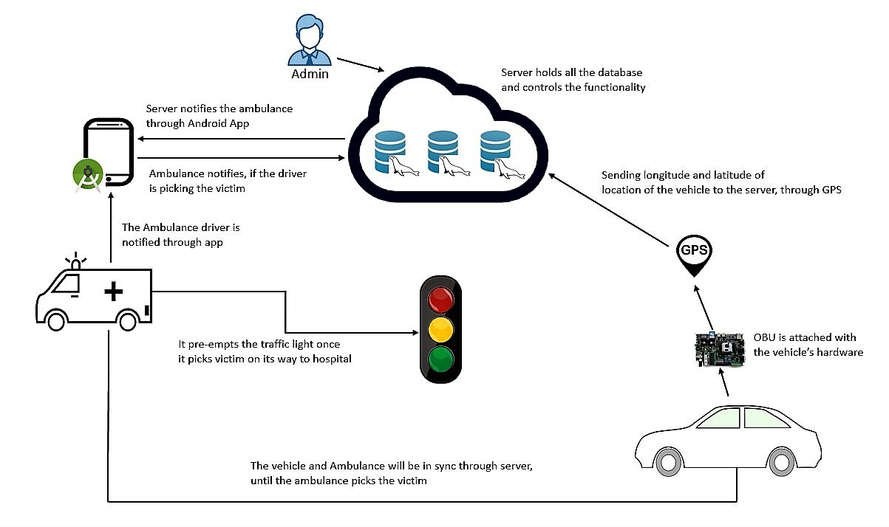
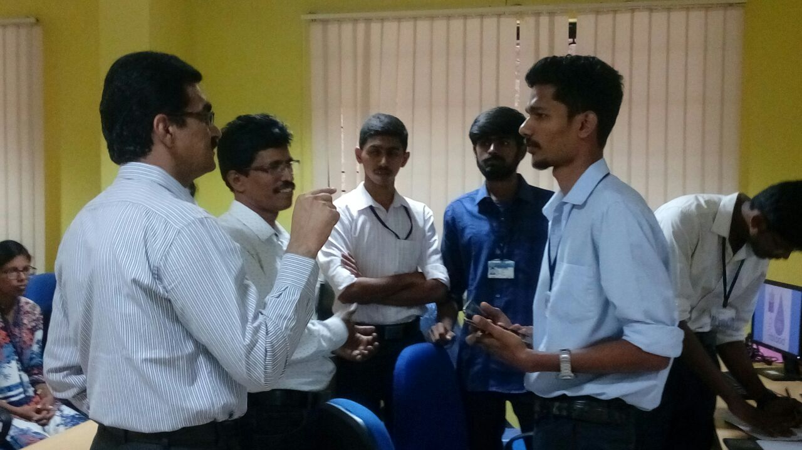

Projects of 2018
-

AN ANDROID APP FOR TRAFFIC PRE-EMPTION USING VANET
Nowadays road accidents, traffic congestion and road hazards are the main traffic problem that are facing today. According to the survey made, India was listed under top 10 countries were maximum road accidents are taking place. To overcome, VANET can play a major role. The project is focusing on an android app, a database server and the hardware equipment’s.......
Read More -

RARE BLOOD TRACKER ANDROID APPLICATION
This project plays an important role in saving lives, which is its main aim. The Rare Blood Tracker is developed to help people to find the nearest blood bank to which they can donate the blood and request the blood from.....
Read More -

Remote Controlling and Threat detection of Home appliances using Arduino
Today we are living in 21st century. It is important to control the home from want area. Home computerization is the control of any electrically and gadgets gadget in our home and office, regardless of whether we are there or away. There are many items accessible that enable us to control over the gadgets naturally with utilizing Arduino microcontroller display either by remote control or even by website page or by portable application......
Read More -

Feeder Weeder Robot
e-Yantra Lab Setup Initiative (eLSI) is a college level program under which colleges are encouraged to setup robotics labs. AIET is privileged to be a part of this initiative since 2013. Our college has conducted a workshop on robotics to students for the consecutive two years. This workshop has helped our students in knowing the basics and programming a robotic kit......
Read More